UNIVERSITAS AMIKOM
YOGYAKARTA
Nama Lengkap Dosen
Nomor Induk Dosen
Dashboard
Tambah Data
Rekap Nilai
Profil Dosen
Keluar
Selamat Datang di Dashboard Dosen,
Creativity Amikom Yogyakarta
Jadwal Kelas
NO.
HARI | JAM | RUANG
MATA KULIAH
ABOUT
PRESENSI
1
Senin | 07.00 - 08.40 | 7.2.1
Pemograman Web
Praktikum
2
Senin | 10:00 - 12:00 | 5.4.3
Basis Data
Teori
BELUM TERSEDIA
3
Selasa | 08:40 - 10:20 | -
Algoritma dan Struktur Data
Teori (Daring)
BELUM TERSEDIA
4
Rabu | 10:50 - 12:40 | 7.4.1
Sistem Operasi
Praktikum
BELUM TERSEDIA
5
Rabu | 09:00 - 11:00 | 7.4.2
Jaringan Komputer
Praktikum
BELUM TERSEDIA
6
Rabu | 13.20 - 15.00 | 7.2.1
Pemograman Web
Teori
BELUM TERSEDIA
7
Rabu | 15.30 - 15:00 | 5.4.3
Basis Data
Teori
BELUM TERSEDIA
8
Kamis | 08:40 - 10:00 | -
Algoritma dan Struktur Data
Praktikum
BELUM TERSEDIA
9
Jumat | 07:00 - 08:40 | 7.4.1
Sistem Operasi
Teori
BELUM TERSEDIA
10
Jumat | 13:20 - 15:00 | 7.4.2
Jaringan Komputer
Teori
BELUM TERSEDIA